January Papers: More Like "Reas-anuary Papers"
New year, new Papers of the Month! Kicking off 2025, it's apparent that reasoning and test-time compute are the hot topics on the block, with much research investigating how to best use these new methods to improve LLM capabilities.
We start with Titans, which introduces a memory module to architectures that can be updated during inference. This results in a hybrid between attention mechanisms and recurrent models, and unlocks the ability to handle really long sequence lengths.
Evolving Deeper LLM Thinking explores evolutionary search strategies to scale test-time compute, outperforming other inference strategies in natural language planning tasks.
Transformer-Squared is a novel approach that adapts LLMs for new tasks by selectively adjusting the singular components of their weight matrices, helping broaden LLMs' abilities to handle diverse tasks with fewer parameters and greater efficiency.
Finally, we look at two recent models from DeepSeek; DeepSeek-V3 and DeepSeek-R1. Given this double-release is packed with so much information, today we'll only cover the high-level details on the innovations described in the papers and their impact on efficiency and model performance — we will release a new blog post soon with a deep-dive into DeepSeek's recent publications.
We hope you enjoy these month's papers as much as we did! If you have thoughts or questions, please reach out to us at @GCResearchTeam.
We hope you enjoy this month's papers as much as we did! If you have thoughts or questions, please reach out to us at @GCResearchTeam.
Titans: Learning to Memorize at Test Time
The key idea
Traditional sequence models, such as Transformers and recurrent neural networks (RNNs), struggle with effectively handling long-term dependencies. Transformers face computational inefficiencies due to their quadratic complexity in attention mechanisms, while RNNs compress historical data into fixed-size states, often leading to information loss. These limitations hinder models from retaining and utilising past information efficiently, especially in tasks requiring long-range memory.
The authors of Titans: Learning to Memorize at Test Time aim to address this challenge by developing a novel memory-augmented architecture that dynamically learns what to store and forget during inference, enhancing both scalability and accuracy in long-sequence tasks. The long-term memory module can be integrated with attention in three different variants proposed in the paper.
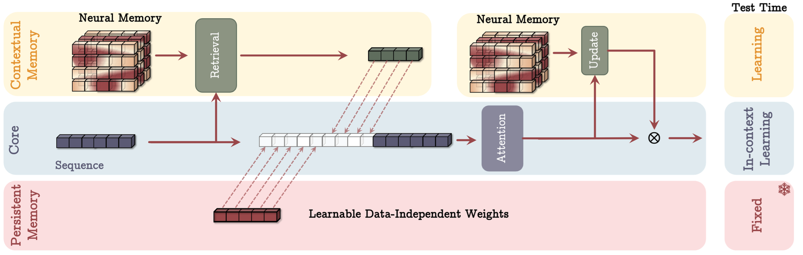
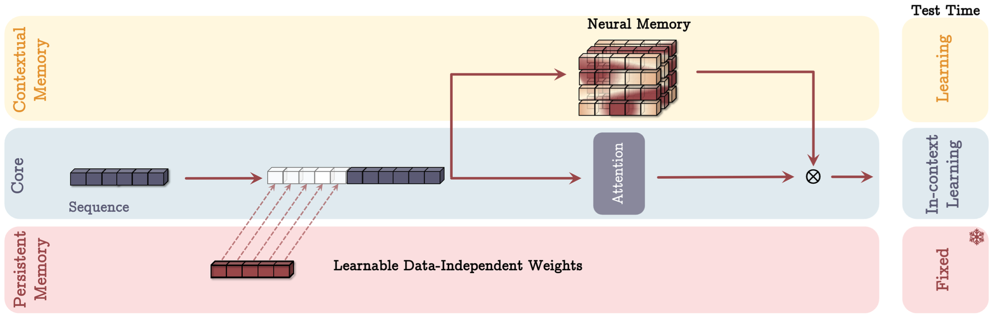
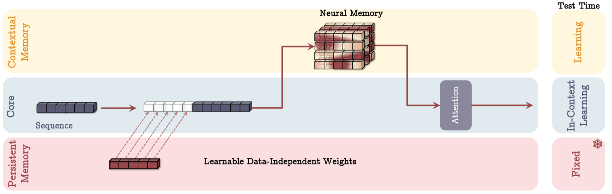
To evaluate their approach, the authors conducted experiments across diverse tasks, including language modeling, common-sense reasoning, genomics, and time series analysis.Titans outperformed traditional Transformers and modern recurrent models, particularly in scenarios requiring long-term memory. Notably, in 'needle in a haystack' tasks where models must retrieve specific information from long sequences, Titans demonstrated superior accuracy, even with context windows exceeding 2 million tokens. The results highlight the model’s ability to dynamically store and recall relevant information, making it a promising advancement in sequence modeling.
Background
The authors focus on kernel based linear attention where the softmax in standard attention implementations is replaced by a kernel function such that \(\phi(x, y) = \phi(x)\phi(y)\), which allows linear attention to be written as:
Choosing the kernel as the identity function, linear attention can be seen in a recurrent format that resembles a write operation \(f(M_{t-1}, x_t)\) followed by a read operation \(g(M_t, x_t)\) to retrieve information from the updated memory module:
Their method
This work draws inspiration from human memory systems, introducing a long-term memory module that enables the model to retain and retrieve information over extended sequences. Instead of treating memory as a static component, the approach dynamically updates it based on the importance of new information, ensuring that relevant details are stored while less useful ones fade over time. The memory architecture itself is implemented using simple MLPs, making it computationally efficient while still allowing for flexible and expressive updates.
- Surprise-based updates: Memory is updated based on surprise, measured as the gradient of the loss function with respect to the input. This ensures that unexpected or highly informative inputs are prioritised for storage.
- Past surprise: To better capture important information that comes after a surprising moment, a momentum term incorporates past surprise, allowing updates to reflect longer-term patterns rather than just momentary novelty.
- Forgetting mechanism: A gating mechanism controls how information is forgotten, gradually removing less relevant or outdated details while preserving crucial knowledge.
- Persistent memory: In addition to long-term memory, the model includes persistent memory, which stores task-specific knowledge that remains relatively static over time, ensuring that important information is retained across different sequences and tasks.
Beyond the development of the Long-term Memory Module (LMM) above, the paper introduces a persistent memory in the form of a set of learnable but input-independent parameters that capture task-related information. The persistent memory is concatenated to an input sequence.
Titans approach concludes by presenting three different variants to incorporate the above with attention:
- Memory As Context (MAC): where the memory is used to enhance the input sequence to attention. The output of attention is also used to update the memory.
- Memory As Gate (MAG): where memory is used as a gating mechanism to the output of attention. Memory is update only with the input sequence.
- Memory As Layer (MAL): where memory is used to compress the input sequence, before attention is applied.
The above approaches can be visualised in Figure 1-3.
Results
The authors tested their model on tasks like language modeling, common-sense reasoning, genomics, and time series analysis. In these experiments, Titans outperformed traditional Transformers and RNNs, particularly in tasks that require long-term memory. For example, it handled long-context sequences better, retaining crucial information over extended periods.
Titans also excelled in "needle-in-haystack" tasks, retrieving rare information from long sequences with context windows larger than 2 million tokens. These results highlight the model’s ability to scale efficiently and manage memory dynamically for complex tasks. For detailed results in each of these experiments, we encourage readers to refer to the paper.
Instead we highlight the ablation study of the paper. Starting with the Long-term Memory Module (LMM) as the base model, they evaluated the effect of removing or modifying key elements one component at a time. The results demonstrated that each component made a substantial contribution to the model’s effectiveness. Notably, the largest improvements came from incorporating weight decay, the momentum term, and convolution operations, while persistent memory also played a significant role. These findings underscore the importance of these mechanisms in enabling the model to effectively manage long-range dependencies.
The authors also compared the three architectural variants of Titans—MAC, MAG, and MAL—across language modeling, common-sense reasoning, and long-context needle in a haystack tasks. MAC and MAG showed comparable performance in language modeling and common-sense reasoning tasks. However, MAC outperformed the others significantly on the long-context NIAH task. Both MAC and MAG also surpassed MAL in all tasks.
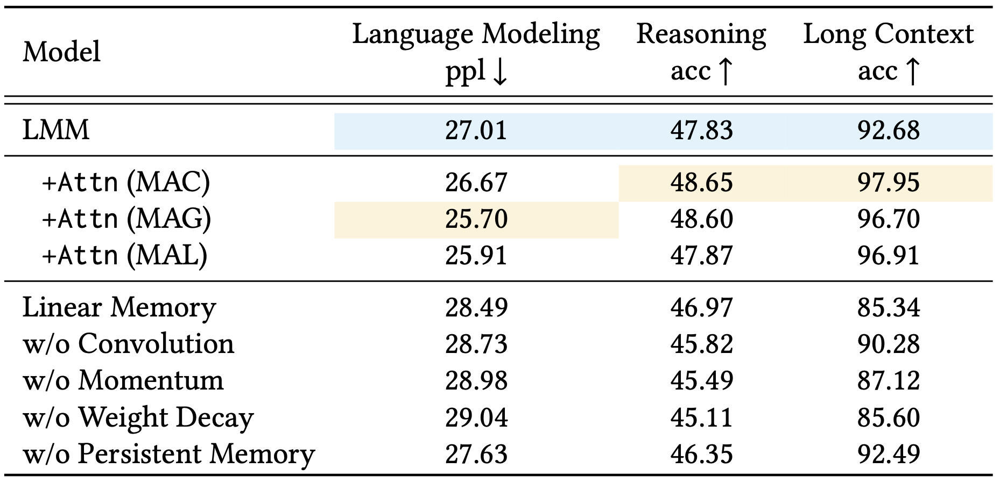
To conclude, the authors mention that the Titans code, implemented in PyTorch and JAX, will be released soon, which is an exciting prospect for the research community eager to explore and build upon their work.
Evolving Deeper LLM Thinking
The key idea
Large language models are becoming increasingly more capable; however, they can still struggle to tackle tasks requiring reasoning, even with additional chain-of-thought and few-shot prompting. Scaling inference-time compute in order to enable language models to robustly solve more complex tasks has thus become a very active topic of research. In this paper, the authors utilize an evolutionary algorithm approach to search for the best model response. They show how this approach performs favorably against other commonly used inference strategies, such as "best-of-N" and sequential revision.
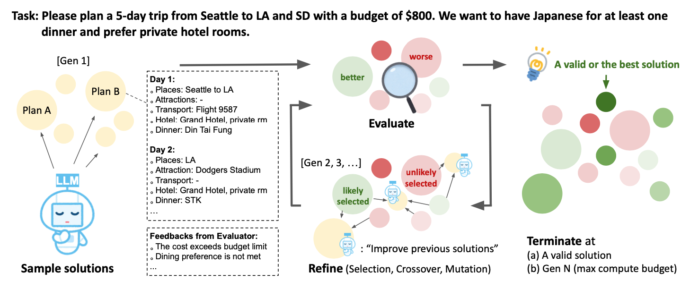
Their method
Evolutionary search
Their method follows the basic principles of a genetic algorithm search — an initial random population of candidates is evolved into a higher-quality population through the following steps:
1) Fitness of each candidate is evaluated based on task performance.
2) Selection: Candidates are stochastically chosen for reproduction, informed by their fitness.
3) Crossover: Chosen "parent" candidates are combined in order to find the best combinations of useful features.
4) Mutation: Candidates are randomly modified in order to induce exploration.
As the candidates with higher fitness are more likely to be selected, the average fitness tends to increase after each generation. In addition, the total population can be divided into smaller sub-populations (islands) which evolve independently, until either a migration event (members are stochastically moved between islands), or a reset event happens (low-fitness islands are substituted with a strong selection from other islands).
Mind Evolution
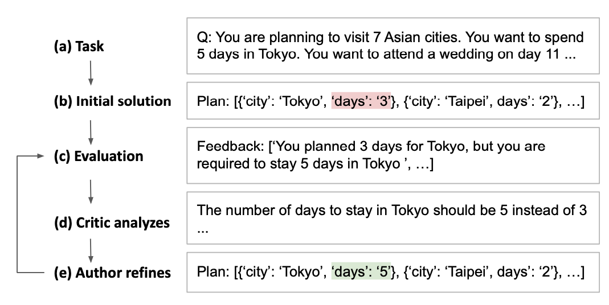
Figure 1 shows their proposed "Mind Evolution" approach, following the evolutionary search principles: * The initial population is created by generating the \(N_{covs}\) model responses in parallel. In addition, each response is sequentially revised \(N_{seq} - 1\) times, giving in total \(N_{covs} \times N_{seq}\) initial solutions forming the starting population. * In order to generate a fitness score for each solution, the task needs to have an associated evaluation function, so that each response is parsed and scored. Additionally, a textual feedback based on the evaluation is also generated which the LLM can then use to improve its subsequent answer. This is done through the "Refinement through Critical Conversation" (Figure 2): after the output of the evaluation, the LLM first takes the role of a "critic" that processes the feedback and gives new instructions, and then the "author", refining the initial answer based on the feedback. * Selection is performed by randomly sampling parents from a probability distribution over all candidate solutions. The distribution is generated by applying a softmax transformation to the fitness scores, so that good solutions are selected with higher probability. * Finally, crossover and mutation are performed by passing the combined parent solutions and their scores to the "critic", and letting the LLM generate a new answer using the combined prompt. This answer can then be further sequentially revised as well. Note that the process of selection and crossover follows the "island" model, where several subpopulations evolve independently (with occasional mixing through migrations and resets).
Results
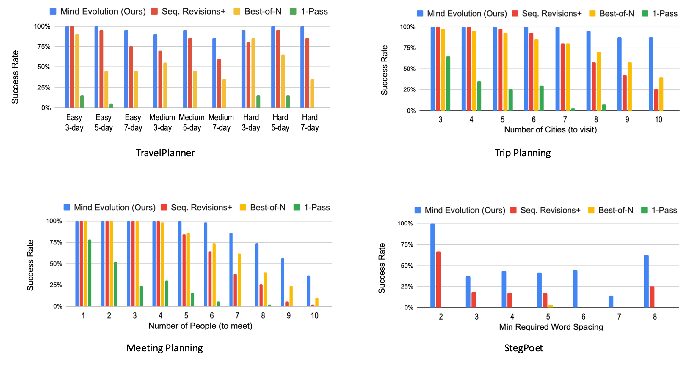
The method was evaluated on the Gemini 1.5 Flash model, comparing the "Mind Evolution" approach to the following baselines: * 1-pass: Solution is generated using a single forward pass through the model. * Best-of-N: Independent solutions are generated in parallel. * Sequential revision: Several (10 here) initial solutions are generated in parallel, and then sequentially revised independently.
All of the methods are run until either the correct solution is found, or until a maximum of turns is hit. The methods are evaluated on different planning tasks: TravelPlanner, Natural Plan (Trip Planning) and Natural Plan (Meeting Planning). In addition, the authors added a new task (StegPoet) where a "hidden message" needs to be encoded within the model response.
Overall, their approach outperforms the baselines, showing particular effectiveness at higher task difficulties. Based on the API costs of running Gemini, it has comparable requirements to the "best-of-N" approach, and significantly lower costs to the sequential revision method.
Takeaways
As more efforts are being put into scaling inference-time compute in order to improve the reasoning capabilities of LLMs, this paper shows that applying evolutionary search principles to optimize the model response can lead to significant performance boosts. The current approach is however limited to tasks where solutions can be programmatically evaluated and scored, and further results on a wider variety tasks (such as mathematical reasoning) could provide more insight into the capabilities of the approach.
Transformer-Squared: Self-Adaptive LLMs
The key idea
The Transformer² paper introduces a new approach to making large language models (LLMs) more self-adaptive, adjusting singular values of weight matrices depending on the task. For that purpose, a two-pass mechanism is used: it first classifies the task, and then applies a specialized "expert" vector in the SVD decomposition of weights. This approach achieves better accuracy compared to classic LoRA fine-tuning, will using significantly fewer parameters.
Background
Traditional adaptative LLMs methods such as LoRA (low rank adaptation) and MoEs (mixture of experts) have shown how LLMs can adapt to very diverse tasks. Nevertheless, these two approaches have major drawbacks: MoEs have a dynamic task routing system, but usually require to be incorporated in the model architecture from pre-training, hence leading to costly training. LoRAs can be fine-tuned on top of an existing pre-trained model, but lack the self-adaptive aspect. Additionally, the number of parameters used in LoRA quickly increases with the number of tasks, as each requires a completely new adapter.
Method
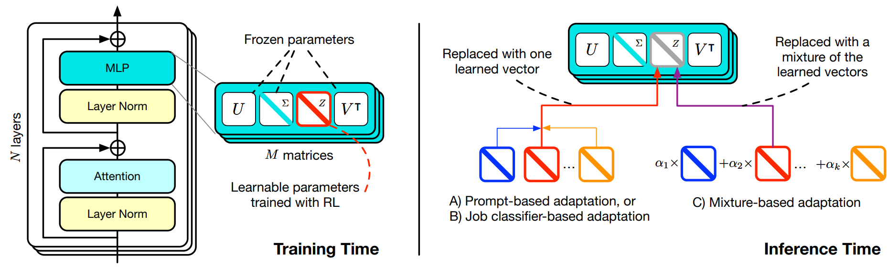
The main innovation introduced by Transformer² is Singular Value Fine-tuning (SVF): fine-tuning models in the singular values space of weight matrices. Compared to LoRA, this approach dramatically reduces the additional parameter count, while enabling composability between expert vectors (in LoRA multiple adaptors are not sharing the same linear space). Additionally, the low-dimensionality of this approach allows to directly used reinforcement learning instead of supervised fine-tuning.
Results
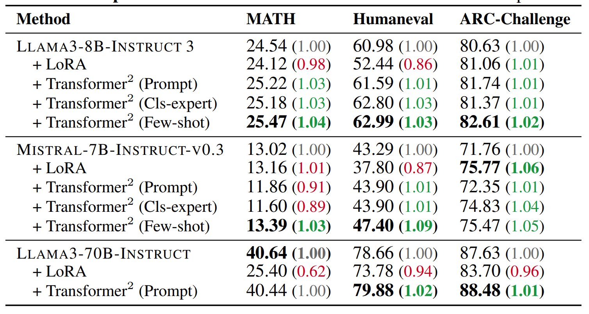
In Transformer², inference is done in two passes: first an analysis for the task at the end, leading to the selection of an expert vector (or a linear combination of them), and the a second classic inference pass using the selected vector. In this work, the authors implement and evaluate three different adaptation strategies, trading off simplicity and task performance: a direct prompt-based selection, a selection based on a classification expert vector, and finally a few-shot adaptation strategy using a linear combination of all expert vectors.
As presented in the result table above, Transformer² achieves similar or improved accuracy on unseen tasks (especially Humaneval and ARC-challenge), showing improved adaptability compared to LoRA fine-tuning.
DeepSeek-V3 & DeepSeek-R1 Technical Reports
With their V3 and R1 models, DeepSeek sets a new state-of-the-art in open-weight models and trades benchmark to benchmark with the best models from Anthropic, Google and OpenAI. The technical reports give detailed accounts of the architecture of the model, the trade-offs that led to it, and the efficient implementation that enabled their final training run to take a headline-grabbing $5.5M of GPU hours.
The key idea
DeepSeek's success comes from improvements along three complementary axes: FLOP efficiency of the model, curation of training data, and (re-)discovery of effective reinforcement learning for LLMs.
DeepSeek's efficiency is the result of excellent engineering and incremental improvements to their fine-grained mixture of expert (MoE) architecture. Their innovations are geared towards making that architecture run efficiently on their hardware and learn effectively.
R1 aims to tackle the reasoning problem through a different lens than most other research in the space; they consider reinforcement learning as the primary strategy of learning how to reason, where the thought tokens are simply an environment for the algorithm to learn how to navigate to get to the correct answer.
While the reports are thorough, some elements are notable by their absence: the team does not share scaling laws (as done in the "Llama 3 herd of models" report), and is unspecific about the dataset curation (as in the Phi-4 technical report).
V3 method
In the table below we cover the architectural innovations, implementation optimisations, and the ablations that are in the DeepSeek-V3 technical report. V3 is a 671 billion parameter "fine-grained" Mixture of Expert (MoE); it uses 8 routed experts per token out of 256 available, with 1 shared expert, it uses multi-head latent attention (MLA) with 128 heads. It was trained on 2048 Nvidia H800 GPUs in about 2 months.
| Name | Description | Impact on Efficiency | Impact on Model |
|---|---|---|---|
| Mixed precision FP8 micro-scaled training | Does matrix multiplication with FP8 tensors scaled in blocks (Nc × Nc) or vectors (Nc), very similar to the micro-scaling (MX) formats available in Blackwell GPUs. The "trick" is to accumulate inside the blocks of 128 in FP8 and apply the scale and accumulate between blocks in FP32. The authors share a huge amount of interesting detail on this topic! | Theoretically: 2x FLOPs available, 1/2 communication, 1/2 memory usage (capacity and BW). If memory was the limit, this might be what enabled them to train such a big model. | Remarkably, None. Loss curves in the Appendix show it, but it took a lot of work to get there. |
| Multi-token Prediction | The MTP module is made of a transformer block combined with the main model's embeddings and output layers. It is trained with the main model to predict an extra token from the last transformer layer's output and the input sequence shifted one to the right. | In training: ~2% increase in compute. In inference: x1.8 increase in throughput using the module as a speculative decoder (predicts 1 extra token per forward pass with 85% accuracy). | Ablations show an average 2% improvement across benchmarks (extremes: -1%, +8%). |
| DualPipe | A pipeline parallel scheduling scheme with duplicated shards which has a very small pipeline bubble and allows perfect overlapping of communication and compute. | Perfect computation/communication overlap... at the cost of 15% of the GPU's compute used for communication (20/134 SMs). | None |
| Loss free load balancing of experts | In the top-K operation used to select experts, add a bias which reflects the load of that expert in the previous batches. This bias term evolves during training but is not trained by the optimiser and does not go into the calculation of the expert output. | Keeps even loads across experts and makes expert parallelism efficient. DeepSeek uses 64-way expert parallelism. | Ablations show ~1.5% benchmark improvement, experts specialise more on discernible topics. |
The improvements described here do not amount to the "order of magnitude performance improvement" that caused a stock market panic. So where is this performance coming from? Is it hidden or fake?
No! It's the natural consequence of successfully scaling up DeepSeek's "fine-grained" Mixture of Expert and Multi-head Latent Attention (MLA) that the DeepSeek-LLM and DeepSeek-V2 papers shared in early and mid-2024. We will unpack how all those innovations work and stack up against the other heavyweight of open models, Llama 3-405B, in a follow-up blog post.
R1 method
The DeepSeek-R1 paper introduces several different models based on different training regimes, but the two we will primarily focus on are DeepSeek-R1-Zero and DeepSeek-R1.
With R1-Zero, the authors began with a pre-trained DeepSeek-V3-Base model, and used Group Relative Policy Optimization as the reinforcement learning algorithm. The RL algorithm is trained to maximise accuracy and generate in a suitable format. By training in this fashion, DeepSeek were able to train a reasoning model without requiring any supervised fine-tuning (SFT). Without requiring supervised datasets that feature reasoning steps, this approach is potentially much more scalable than other common SFT approaches.
One potential drawback the authors found with R1-Zero is that the model's thoughts would suffer from poor readability and language mixing. They address this in R1 by initially doing a small about of SFT with "cold-start" data, which helps to encourage the model to generate interpreatable reasoning steps. They then training using RL like with R1-Zero, before then creating a new SFT dataset upon this RL-trained checkpoint. This dataset can then be used to do further fine-tuning.
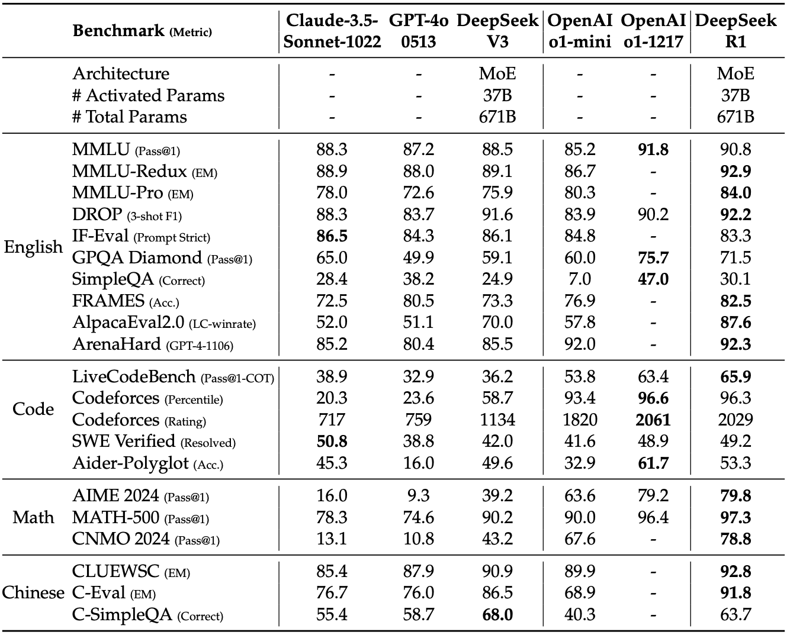
The authors also compared how RL training a smaller model compares with distilling from a larger RL-trained model, and found that distillation can yield far better results (although this does require having a larger, more capable reasoning model to distill from).
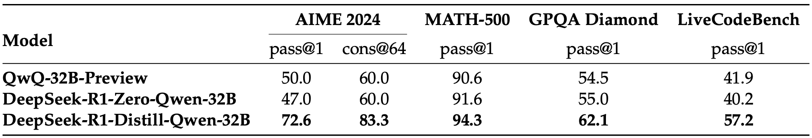
Takeaways
This success does not come out of nowhere! It is the logical continuation of the work that DeepSeek has published throughout 2024. They have been vying with Meta's Llama family of models for the best open weight model for a year. The efficiency of the training pipeline is a superb achievement of engineering, and it is fantastic to have another organisation publish what works at scale and what is needed to push the frontier.